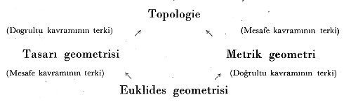
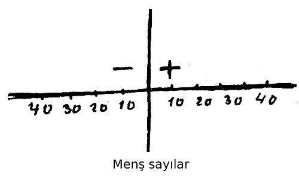
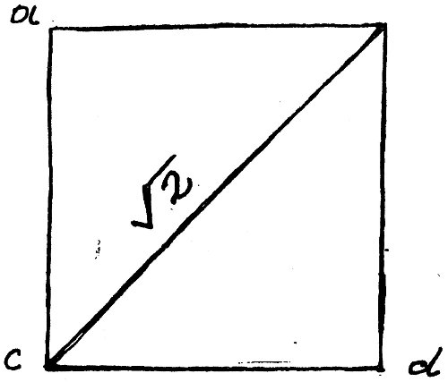
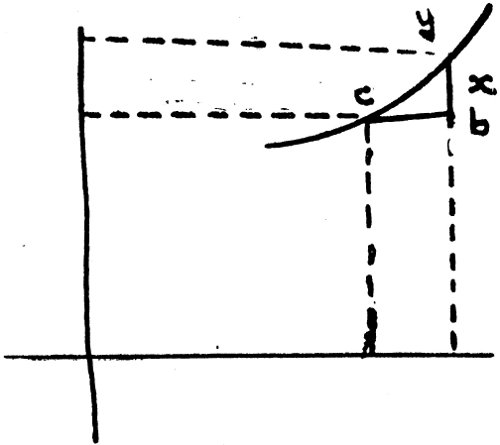

Riemann bize n boyutlu bir mekânın geometrisini kuracak aksiyometri sistemini veriyor. Hilbert de bütün Euklidesçi olan ve olmayan geometrileri ve matematiğin başka kısımlarını birleştirecek bir aksiyomatik bulmaya çalışıyor. Bu teşebbüs başlıca şu aksiyomlar zümresine dayanıyor: 1) Birleşme aksiyomları, 2) Dağıtım aksiyomları, 3) Paralel aksiyomu (Euklides postulatı), 4) Tam sarihlik (congruence) aksiyomu, 5) Süreklilik aksiyomu (Arkhimedes aksiyomu). Hilbert’in bu geniş birleştirme teşebbüsü matematiğin ayrı dallarında kendi başına gelişen birçok bahsin aynı prensiplerle açıklanmasını mümkün kılacak bir formelleştirmedir.
Euklidesçi geometrilerle Euklidesçi olmayan geometrilerin ilişiği şöyle bir cetvelle gösterilebilir:
Euklidesçi olmayan geometrilerin doğuşu:[86] Yunan geometricilerin çalışmaları (MÖ 4. yüzyıldan 3. yüzyıla kadar) Euklides tarafından Unsurlar’da (Eléments) toplandı. Euklides geometrisini tanımlar, aksiyomlar ve postulatlar üzerine dayandırıyor ve onlardan mantıki sonuçlamalar çıkarıyordu. Postulatların en tanınmışı paraleller postulatıdır ki, bunu şöyle ifade ediyordu: “Bir doğru çizgi başka iki doğru çizgiyi keser ve aralarında toplamı iki dik açıdan küçük olan iç açılar teşekkül ederse, bu iki çizgi uzatılınca birbirlerini keserler.” Paraleller kuramı bu postulat üzerine dayanmaktadır. Euklides’den biraz sonraki Yunan geometricilerinde bile bu postulatı ispat, yani postulatı bir teorem (dava) haline koyma teşebbüsleri gelişmeye başlamıştı. Bu denemeler sonunda nihayet postulatın yerine, az çok daha bariz başka bir postulat geçti. Böylece Proklus (420-485) Euklides geometrisine yazdığı şerhinde birbirini kesen iki doğrultu arasındaki mesafenin değiştiği halde, iki paralel arasındaki mesafenin sabit kaldığı fikrine dayanıyordu. Buna benzer bir iddia da daha sarih olarak İslam geometricilerinden Nasireddin Tusî (1201-1274) tarafından ileri sürülmüştür. Tusî aynı suretle paraleller “mevzua”sını ispata çalışıyordu. Bu postulattan yeni bir fikir bulmak için 17. yüzyılda Wallis’e kadar gelmek lazımdır (1616-1703). Bu geometri âlimi bu postulatın yerine belirli bir üçgene benzer keyfi büyüklükte bir üçgenin varlığını kabul eden başka bir postulat koydu.
Gerolamo Saccheri (1667-1733) büsbütün başka bir bakımdan soruyu ele aldı. O üç açısı dik açılı olan bir dikdörtgen tasavvur etti ve dördüncü açı için mümkün üç varsayımı araştırdı.

D’nin dik açı olması hali Euklides geometrisini doğurur. Saccheri doğru çizginin sonsuz olduğu varsayımına dayanarak D’nin dar açı olması halini bertaraf etti. Yeni bir postulat kurmak sureti ile D açısının geniş olduğu üçüncü varsayımı da kaldırmayı başardı. Saccheri’nin araştırmaları geometri prensiplerinin incelenmesinde büyük bir ilerleme meydana getirdi. D açısının dik veya geniş olduğuna göre bir üçgenin iç açıları toplamı ya iki dik açıya eşit, ya yüksek, ya aşağı olacaktır. J. H. Lambert (1728-1777) daha ileri gitti. Paraleller kuramında Saccheri’nin fikrini ele alarak D dar açısı varsayımının hiçbir çelişmeye götürmediğini gösterdi. Bir üçgenin iç açıları toplamının iki dik açıdan fazla olduğunu, ele aldığı prensiplerin mantıki sonucu olarak ispat etti. Yine Lambert D açısının geniş farz edildiğine göre, kürevî geometri ile yüzey geometri arasında karşılaştırma yaptı. Legendre (1752-1833) bir üçgenin açıları toplamı iki dik açıdan fazla olan geometriler üzerinde yeni araştırmalar yaptı. Buradan Saccheri ve Lambert’in ulaştığı sonuçları elde etti. İki bin yıllık araştırmadan sonra Euklides paraleller postulatının hakiki rolü son yüzyıl başında tamamen gösterilebildi. Gauss’un (1737-1856), F. K. Schweikart’ın (1780-1858), Taurinus’un (1794-1874), Lobatchevsky’nin (1793-1856), J. Bolyai’ın (1802-1860) ve daha sonra Riemann’ın (1826-1866) çalışmaları Euklidesçi olmayan iki geometrinin kurulmasına doğru gidiyordu. Bu geometrilerde artık paraleller postulatının yeri yoktu. Bunlar Lobatchevsky ve Riemann geometrileri idi.
Riemann geometrisinde A’dan Aa yüzeyine çizilen bütün doğrultuların a doğrultusuyla karşılaştığı kabul edilir. Paralel kavramı artık yoktur. Bu geometri D açısının açık olduğunu kabul eden varsayımda Saccheri geometrisine ulaşır. Burada artık doğru çizgi sonsuz diye kabul edilmez. Lobatchevsky ve Riemann geometrilerinin mantıki bir çelişme olmaksızın inkişaf edebileceği durumu, Euklides paraleller postulatının tam bir postulat olduğunu, yani daha önce Euklides tarafından kabul edilen postulatlara dayanarak ispat edilemediğini gösterdi.
Euklides geometrisi postulatları: Paraleller postulatının rolü gösterilince, burada iki soru meydana çıkar: 1) Euklides geometrisinin bütün postulatlarını saymak. 2) Bu çeşitli postulatların bağımsızlığını ispat etmek.

Bu soruların halli son yüzyılda mümkün oldu ki, bu da birçok geometricinin çalışmaları sonucundadır. Burada 1899’da Hilbert tarafından verilen postulatlar sınıflamasını zikredeceğiz. Hilbert’e göre üç türlü varlık sistemi tasavvur edelim. Birinci sistemdeki varlıklara noktalar, ikinci sistemdekilere doğrular, üçüncü sistemdekilere yüzeyler diyelim.

Bu ideal varlıklar arasında geometrinin postulatları ve aksiyomları olan bazı nispetler bulunduğunu kabul edeceğiz. Bunlar beş zümreye ayrılabilir. Bu çeşitli aksiyomlara Hilbert sonradan “tamamlık” (intégrité) aksiyomunu kattı. Noktalar, doğrular, yüzeyler sistemine başka varlıklar katalım. Başka deyişle, geometrinin unsurları, bütün aksiyomlar sabit kaldığına göre, hiçbir genişlemeye elverişli olmayan bir varlıklar sistemi teşkil eder. Geometri aksiyomları bildirilince, geriye onların çelişik olmadıklarının ispatı kalır. Bunu sağlamak için, Hilbert sayılan bütün aksiyomları doğrulanmış[87] bulunan analitik bir geometri kurdu. O zaman da aksiyomların bağımsızlığını doğrulamak kalıyordu. Bu ise aksiyomlardan biri reddedilen, yani zıt hassası olan başka bir aksiyomla değiştirilen mantıki bir sistem kurmaktan ibarettir. Böylece Riemann ve Lobatchevsky geometrileri paraleller postulatının ötekilerle bağımsız olduğunu ispat eder. Burada bir noktayı daha işaret etmek gerekiyor: Bu da bir geometriyi, mesela Lobatchevsky geometrisini geliştirirken hiçbir çelişme ile karşılaşılmadığını ispat etmektir. Bunun için tek bir metot vardır. Bu da Euklides geometrisinden hareket etmek üzere nokta, doğru, yüzey denilen unsurları elverişli bir surette seçmek ve aynı değerde bir geometri kurmaktır. Lobatchevsky ve Riemann geometrilerini bu bakımdan ilerde inceleyeceğiz. Hilbert’in muhtırasında birçok geometrilerin, bilhassa non-archimédien bir geometrinin kurulması sorunu ele alınmıştır. Bu geometride 5. zümre aksiyomu doğrulanmamıştır. Bu yolda geometrinin esaslarına ait önemli araştırmaları olan G. Veronèse ondan önce davranmıştır. Burada Hilbert tarafından non-arguésien bir geometrinin kurulması teşebbüsüne girildiğini de işaret edelim.[88]
Euklidesçi olmayan geometrileri daha somut bazı misallerle açıklamaya çalışalım. Matematik işlemlerin rolünü tetkik ederken, matematik şekiller ile fizik ihtimaliyetler arasında ne dereceye kadar uyuşma olduğunu, birincilerin ikincileri ifadeye ne kadar yaradıklarını meydana çıkarmak kabil olur. Böyle bir araştırma matematikçi kadar fizikçiyi de, mantıkçıyı da ilgilendirir ve bundan dolayı felsefenin konusunu teşkil eder.
Matematikçilerin “inşa” ettikleri[89] ve doğrudan doğruya gerçek ile ilgisi yok gibi görünen başlıca üç türlü mekân tipi vardır: 1) Genelleştirilmiş mekânlar. 2) Çevre ve alan (configuration) mekânları. 3) Soyut mekânlar.
1. Genelleştirilmiş mekân deyince adi Euklides mekânı ile sezgi bağlarını muhafaza eden mekânları anlıyoruz. Mesela üçten fazla boyutlu Euklides mekânları böyledir. Bu tarzda inşaların suni olduğuna şüphe yoktur. Adi sezgiyle kavranan münasebetlerin cebir dili ile orada genelleştirildiğini görüyoruz. Dört boyutlu bir Euklides mekânında bir düzeyden bahsetmek, dört değişkenli birinci dereceden bir denkleme düzey demektir. Çünkü üç boyutlu adi düzey üç değişkenli birinci dereceden bir denklemle ifade edilir. Minkowsky’nin dört boyutlu geometrisi gibi, bu türlü matematiklerde somuttan soyuta, tasvirden sembole doğru yükseliş görülmektedir. Buna karşı soyuttan somuta doğru giden geometrilere de rastlıyoruz.
2. Çevre ve alan (configuration) geometrileri, dalgalar mekaniğinde Schrödinger’den beri tatbik edilmektedir. Onların başlıca maksadı tek bir noktanın hareketi gibi bir noktalar sistemi’nin hareketlerini tasvir etmektir. Burada bir çeşit genelleştirme vardır. Ya sistem üç boyutlu bir mekânda N nokta ile gösterilmiştir yahut bütün sistem 3 N boyutlu bir mekânda tek bir nokta ile gösterilmiştir. Bu basit tahavvül (transformation) usulü, hesapların gelişmesini çok kolaylaştırır. Böylece bir ihtimaliyet dalgasının bu 3 N boyutlu mekânda yayılması temsil edilebilir.
3. Şimdi asıl soyut mekânlara gelelim. Burada mekân tamamı ile soyut bir unsurlar cümlesidir. Fréchet buna soyut sınıf diyor. Burada unsurlar arasında yakınlık, komşuluk kavramları işe karışır. Soyut mekânın durumu çok belirsiz olduğu için, birçok soyut mekânlar tasarlanabilir. Bu arada Riemann’ın “eğrilik” kuramını (courbure), Hermite’in “matrice”lerini, Galois’nın “groupe”lar kuramını söyleyebiliriz.
Eğrilik kavramı: Soyut geometriler içinde en çok bahsedilen (courbure) eğrilik mekânıdır. Herhangi elastiki bir cismi veya bir balmumunu eğerek, bükerek başka bir şekle koysak, birinci halle ikinci hal arasında bir münasebet devam eder. Balmumunda değişmelere rağmen, bunun üzerinde alınan iki noktanın mesafesi ile ikincideki iki noktanın mesafesi arasındaki nispet sabit kalır. Bazen de kauçukta olduğu gibi, madde hem şeklini değiştirir, hem genişler. Katı cisimlerde ise ne şekil değişir, ne genişleme vardır. Mesela daire ve elips gibi iki şekil alalım. Son varsayıma göre iki eğri ayrı kalırlar. Birinci varsayıma göre iki eğri eşit uzunlukta iseler aynı kategoriye girerler. Üçüncü varsayıma göre daire ve elips, uzunluk bahis konusu olmaksızın, daima aynı kategoriye girerler. Burada birinci varsayıma karşılık olarak “metrik geometri”, ikinci varsayıma karşılık olarak “topoloji”yi veya analysis situs’ü görüyoruz.[90]

Riemann geometrisi: Riemann da (1826-1866) Lobatchevsky gibi Euklides geometrisinin bazı postulatlarını ortadan kaldıran bir geometri kurdu. Ona göre bir doğrultuya hiçbir paralel çizilemez, bir yüzey üzerinde herhangi iki doğrultu daima birbirlerini keserler. Bir kürenin yüzeyi (ki orada üçüncü boyut yok gibi farz edilebilir. Yani o küreye yapışık canlılar böyle düşünebilirler) iki boyutlu Riemann geometrisinin geliştirilmesi için en elverişli yerdir. Böyle bir yüzeyde Euklides yüzeyindeki doğrultuya karşılık büyük bir daire vardır. Euklides geometrisinde doğrultu iki nokta arasında en kısa yol olduğu halde, Riemann geometrisinde bir daire parçası iki nokta arasında en kısa yoldur.
Başka geometriler: Lobatchevsky ve Riemann’dan sonra bir postulatı değiştirmek üzere çeşitli geometriler kurma teşebbüsleri birbiri ardı sıra geldi. Bunlardan başlıcaları non-arguésien geometri, n boyutlu geometri vs.’dir. Ancak bu geometrilerin çokluğu onların yine de formel bir sisteme bağlı olmalarına engel olamaz. Daha önceki bahiste gördüğümüz gibi mantığın formelleşmesi, aksiyomatiğin kurulması, onların birbirine daha iyi bağlanmasını ve en genel aksiyomatiklerle ifade edilmesini temin etmiştir. Böylece birbiriyle çelişik gibi görünen bu çeşitli geometriler birbirine bağlanarak bir sistem teşkil ederler. Bu sistemi göstermek için geometri dalları arasındaki münasebetleri bir şema haline koyalım:
Lobatchevsky paralel postulatından vazgeçerek kurduğu geometrisini şu şekilde tasarladı: Rus ovasındaki jeodezi çalışmalarında yeryüzünün enlem ve boylam dereceleri ölçülüyordu. Düzey bir haritada birbirine paralel olan bu hatların kürevî bir haritada kutuplarda birleşmek üzere birbirini kestiğini gördü. O halde acaba yarıçapı sonsuz olan kürevî bir kâinatta bütün paralel dediklerimiz aynı suretle uzatılınca, birbirleriyle buluşmayacaklar mıdır? İşte Lobatchevsky’nin geometrisi bu tarzda kürevî bir âlemde düşünülmüştür.
Euklides geometrisinden başlarsak, mesafe kavramından tecrit edince tasarı geometrisini, doğrultu kavramından tecrit edince metrik geometrileri, yani yukarıda gördüğümüz Euklidesçi-olmayan bütün geometrileri elde ederiz. Tasarı geometrisinde doğrultu kavramından vazgeçince topolojiye ulaşırız. Nitekim metrik geometrilerde mesafe kavramından vazgeçince yine topolojiye ulaşırız. Topoloji, elastiki yüzeylerin ve kıvrımların geometrik tetkiki demektir. Topolojide iki yüzey ve kıvrım eşit değerdedirler. Birindeki geometrik esaslar ötekinde de devam eder. Bunu ifade için küp şeklinde katı bir balmumunu yumuşatarak yuvarlak bir hale getirelim. Birincisi üzerindeki vasıflar ikincisinde devam eder. Zamanımızda Einstein fiziğinin genişliğini (ışığın eğri olarak yayılışını, zamanın dördüncü boyut oluşunu vs.) bu suretle açıklamaktadırlar.
***
Sayı kavramının çeşitleri: Matematik soyutlama ilerledikçe sayı kavramının birçok çeşitleri meydana çıkmıştır.
a) Menfi sayılar: Bir tam sayı serisine daima yeni sayılar katabilir ve çıkarabiliriz. Fakat bu serideki sayı miktarından fazlasını ondan çıkarırsak, burada özel bir durumla karşılaşırız. Mesela 10 sayısından 15 çıkardığımız zaman -5 kalır. Bu menfi bir sayıdır. Menfi sayı fiilen yoktur, fakat gerçekte sayıların hassalarını anlamak için onu düşünmek zorundayız. Bunu şöyle ifade edebiliriz: Birinden 10 lira alacağım vardı, o bana 15 lira verdi, bu suretle ona 5 lira borçlu kaldım. Fiilen bu 5 lira yoktur, ancak borç olarak vardır. Menfi sayıları bir koordinatta şöyle gösterebiliriz:
b) Rasyonel ve irrasyonel sayılar: Bir arsayı ölçmek istediğimiz zaman metre veya arşın kullanırız. Fakat bir karenin çapını ölçmek istediğimiz zaman bazı güçlüklerle karşılaşırız.
Pythagoras teoremine göre dik açı karşısındaki kenar 22’dir. Çap da ÷2 olur. İşte burada adi ölçüde kullandığımız sayıdan farklı bir sayı meydana çıkıyor ki buna irrasyonel sayı deniyor. Matematiğin gelişmesi ilkçağdan beri irrasyonel sayıların kullanılması ile mümkün olmuştur. Bütün cebir denklemlerinin çözülmesinde bu sayılar karşımıza çıkar. Halbuki onlar tabii ve rasyonel sayılar sınırını çok aşmaktadırlar.
c) Transandant sayılar: x mihveri üzerinde öyle noktalar vardır ki onların bir koordinattaki ifadesi buraya kadar gördüğümüz sayılardan hiçbirisi ile gösterilemez. İşte bu durumda elde ettiğimiz özel sayılara transandant (asam) denir. Mesela p sayısı böyledir. Onu hiçbir cebir denkleminden çıkaramayız. Bir dairenin yüzölçümünü pr2 ile gösteriyoruz; burada p transandanttır. Buraya kadar gördüklerimiz cebir denklemleri ile çözüldüğü için onlara cebri sayılar, transandant sayılara da cebri olmayan sayılar denir. Her ikisine birden gerçek (réel) sayılar denmektedir. Gerçek sayılar bir doğrultu üzerinde bulunurlar yahut bir doğrultunun noktaları ile temsil edilebilirler.
d) Mevhum (imaginaire) sayılar: Cebirde bu söylediklerimizden başka bir de mevhum sayılar düşünülmüştür. Mevhum sayı bir doğrultunun noktaları ile temsil edilemez. Ancak bir yüzey üzerindeki nokta ile gösterilebilir. Başka bir deyişle onu iki gerçek sayının münasebetinden, mesela iki doğrultunun birbirini kestikleri noktadan çıkararak ifade edebiliriz. Sonsuz küçükler alanında mevhum sayılar kullanılır. Birçok matematik ve fizik problemlerinin çözülmesinde bu çeşitli sayı türlerine başvurmaya mecburuz. Onlar parmaklarımızla saydığımız somut sayılardan çok farklı soyutlamalardır ve bu soyutlamalar olmasaydı ilmimizin bugünkü gelişmesi imkânsız olurdu.